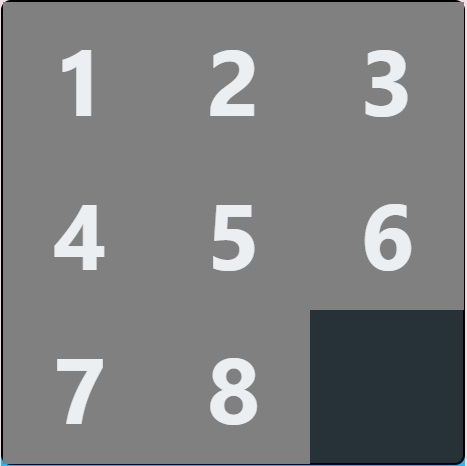
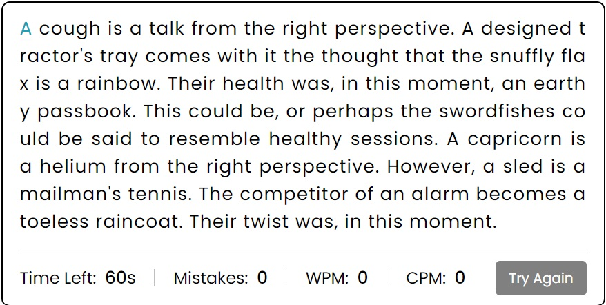

Click on an image below to play the game. Instructions are below each image.
Memory Card

Enhance your memory with this Memory Card game. Start with all cards face down and flip two at a time to reveal them. If the cards match, then they will stay face-up. If the cards don't match, they will turn face-down again. Remember the card positions and try to find their matches. The shape and colour of the cards must match.
Slider Puzzle
Move the numbers around so that the top row shows the number 1 to 3, the second row shows 4 to 6 and the third row shows 7 & 8, with the bottom right corner showing the black square. Click a number to move the number into an empty space.
Hangman

Test your vocabulary and spelling skills with Hangman. Guess letters to fill in the blanks for a hidden word before the drawing of a hangman is completed. Each incorrect guess brings the hangman closer to completion. Can you save him in time?
Pong

This game simulates a ping-pong game. You control the left paddle. Use the up and down keys to move the paddle to deflect the ball. There is no time limit for this game.
Typing Speed Test (difficult to play on a phone)
Measure and improve your typing skills with this Typing Speed Test. Type exactly what you see, including capitlisation, spaces and punctuation. The game tracks your Words Per Minute (WPM) and Characters Per Minute (CPM). The green letter is the position of the cursor and the green letter needs to be typed. You have 60 seconds.
Math Whiz

A fun math challenge where you get to apply your math skills to complete as many calculations as you can in 60 seconds.
Word Scramble
Put your word recognition to the test with Word Scramble. Given a set of scrambled letters, your task is to rearrange them to form a word related to the provided hint. It's a race against the clock with only 30 seconds to unscramble each word!